전산응용기계제도기능사 (2008-07-13 기출문제)
1과목: 기계재료 및 요소
1. 길이가 100㎜인 스프링의 한 끝을 고정하고, 다른 끝에 무게 40N의 추를 달았더니 스프링의 전체 길이가 120㎜로 늘어났다. 이때의 스프링 상수[N/㎜]는?
- 0.5
- 1
- 2
- 4
(정답률: 65%)

2. 베어링의 재료는 다음과 같은 성질을 갖고 있어야 한다. 이 중 틀린 것은?
- 눌러 붙지 않는 내열성을 가져야 한다.
- 마찰계수가 적어야 한다.
- 피로 강도가 높아야 한다.
- 압축 강도가 낮아야 한다.
(정답률: 64%)
3. 다음 중 특히 심냉처리(Sub-Zero treatment)해야 하는 강은 어느 것인가?
- 스테인리스강
- 내열강
- 게이지강
- 구조용강
(정답률: 31%)
4. 금속 탄화물의 분말형 금속 원소를 프레스로 성형한 다음 이것을 소결하여 만든 합금으로 절삭 공구와 내열, 내마멸성이 요구되는 부품에 많이 사용되는 금속은?
- 초경합금
- 주조 경질 합금
- 합금 공구강
- 세라믹
(정답률: 44%)
5. 재료의 안전성을 고려하여 안전할 것이라고 허용되는 최대의 응력을 무슨 응력이라 하는가?
- 허용응력
- 주응력
- 사용응력
- 수직응력
(정답률: 87%)
6. 탄소강의 기계적 성질 중 상온, 아공석강(C<0.77%) 영역에서 탄소(C)량의 증가에 따라 저하하는 성질은?
- 인장강도
- 항복점
- 경도
- 연신율
(정답률: 42%)
7. 주조시 주형에 냉금을 삽입하여 주물 표면을 급냉시키므로서 백선화하고 표면경도를 증가시킨 내마모성 주철은?
- 가단주철
- 고급주철
- 칠드주철
- 합금주철
(정답률: 52%)
8. 다음 중 분할 핀에 관한 설명으로 틀린 것은?
- 핀 한쪽 끝이 두 갈래로 되어 있다.
- 너트의 풀림 방지에 사용된다.
- 축에 끼워진 부품이 빠지는 것을 방지하는데 사용된다.
- 테이퍼 핀의 일종이다.
(정답률: 60%)
9. 연강재 볼트에 8000N의 하중이 축방향으로 작용할 때, 볼트의 골지름은 몇㎜ 이상이어야 하는가? (단, 허용압축응력은 40N/mm2 이다.)
- 6.63
- 20.02
- 12.85
- 15.96
(정답률: 23%)
10. 평벨트와 비교한 V 벨트 전동장치의 특징이 아닌 것은?
- 고속운전이 가능하다.
- 미끄럼이 적고 속도비가 크다.
- 엇걸기로 사용 가능하다.
- 동력 전달 상태가 정숙하고 충격을 잘 흡수한다.
(정답률: 61%)
2과목: 기계가공법 및 안전관리
11. 6:4 황동에 철 1~2%를 첨가한 동합금으로 강도가 크고 내식성도 좋아 광산기계, 선반용 기계에 사용되는 것은?
- 톰백
- 문츠메탈
- 네이벌황동
- 델타메탈
(정답률: 54%)
12. 브레이크 블록의 길이와 나비가 60㎜×20㎜이고 브레이크 블록을 미는 힘이 900N일 때 제동압력은?
- 0.75 N/mm2
- 7.5 N/mm2
- 75 N/mm2
- 750 N/mm2
(정답률: 42%)
13. 다음 원소 중 고속도강의 주요 성분이 아닌 것은?
- 니켈
- 텅스텐
- 바나듐
- 크롬
(정답률: 48%)
14. 알루미늄합금은 가공용과 주조용으로 나누어진다. 다음 중 가공용 알루미늄합금에 해당되는 것은?
- 알루미늄 - 구리계 합금
- 다이캐스팅용 알루미늄 합금
- 알루미늄 - 규소계 합금
- 내식성 알루미늄 합금
(정답률: 35%)
15. 다음 중 동력 전달용 기계요소가 아닌 것은?
- 기어
- 마찰차
- 체인
- 유압 댐퍼
(정답률: 72%)
16. 현재 알려진 공구 재료 중에서 가장 경도가 높고 내마멸성이 크며 절삭속도가 크고 능률적인 것이나 취성이 크고 고가인 공구재료는?
- 다이아몬드
- 합금공구강
- 탄소강
- 고속도강
(정답률: 80%)
17. 깊이 400㎜, 지름 50㎜인 둥근봉을 절삭속도 100m/min로 1회 선삭하려면 절삭 시간은 약 몇 분 걸리는가? (단, 이송속도는 0.1㎜/rev이고, 공구의 접근 또는 설치를 위한 시간은 무시한다.)
- 2.3
- 4.8
- 6.3
- 8.8
(정답률: 40%)
18. 구멍의 내면, 곡면, 내접 기어, 스플라인 구멍 가공이 가능한 공작 기계는?
- 셰이퍼
- 플레이너
- 슬로터
- 드릴링 머신
(정답률: 39%)
19. 일감 표면에 약한 압력으로 숫돌을 눌러대고 일감에 회전운동과 이송을 주며 숫돌을 다듬질할 면에 따라 매우 작고 빠른 진동을 주는 가공법은?
- 래핑
- 슈퍼피니싱
- 호닝
- 액체호닝
(정답률: 69%)
20. 숫돌 표면에 무디어진 입자나 기공을 메우고 있는 칩을 제거하여 본래의 형태로 숫돌을 수정하는 방법을 무엇이라 하나?
- 무딤
- 눈 메움
- 드레싱
- 시닝
(정답률: 69%)
21. 밀링에서 브라운 샤프형의 21구멍 분할판을 사용하여 7등분 하고자 한다. 맞는 것은?
- 7회전하고 40구멍씩 돌린다.
- 5회전하고 15구멍씩 돌린다.
- 7회전하고 21구멍씩 돌린다.
- 15회전하고 5구멍씩 돌린다.
(정답률: 29%)
22. 각도 측정에 사용되는 측정기가 아닌 것은?
- 사인바
- 수준기
- 오토콜리메이터
- 측장기
(정답률: 45%)
23. 하이트 게이지 중 스크라이버 밑면이 정반에 닿아 정반면으로부터 높이를 측정할 수 있으며 어미자는 스탠드 홈을 따라 상하로 조금씩 이동시킬 수 있어 0점 조정이 용이한 구조로 되어있는 것은?
- HB형 하이트 게이지
- HT형 하이트 게이지
- HM형 하이트 게이지
- 간이형 형 하이트 게이지
(정답률: 45%)
24. 다음 공작기계 중에서 공구와 일감의 상대적인 운동 방식이 나머지와 다른 것은?
- 밀링 머신
- 세이퍼
- 플레이너
- 슬로터
(정답률: 43%)
25. 연삭 숫돌을 고정시킬 때, 평형플랜지의 직경은 연삭 숫돌바퀴 직경의 얼마로 해야 안전한가?
- 1/25 이상
- 1/3 이상
- 1/10 이상
- 1/20 이상
(정답률: 31%)
3과목: 기계제도
26. 다음 기하공차의 종류를 나타낸 것 중 틀린 것은?
- 진직도 ( ─ )
- 평면도 ( □)
- 진원도 ( ○ )
- 원주 흔들림 ( ↗ )
(정답률: 69%)
27. 치수 공차의 기입법 중 φ25E8 구멍의 공차역은? (단, IT8급의 기본공차는 0.033mm이고, 25에 대한 E구멍의 기초가 되는 치수 허용차는 0.040mm이다.)
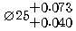
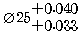
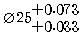
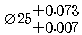
(정답률: 41%)
28. 다음 등각 투상도에서 화살표 방향의 투상으로 맞는 것은?
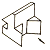
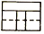
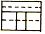
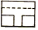
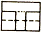
(정답률: 47%)
29. 끼워 맞춤에서 최대 죔새를 구하는 방법은?
- 축의 최대 허용 치수 - 구멍의 최소 허용 치수
- 구멍의 최소 허용 치수 - 축의 최대 허용 치수
- 구멍의 최대 허용 치수 - 축의 최소 허용 치수
- 축의 최소 허용 치수 - 구멍의 최대 허용 치수
(정답률: 60%)
30. 다음 도면에서 표시로 옳은 설명은?
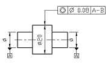
- 데이텀 A-B를 기준으로 흔들림 공차가 지름 0.08mm의 원통 안에 있어야 한다.
- 데이텀 A-B를 기준으로 동심도 공차가 지름 0.08mm의 두 평면 안에 있어야 한다.
- 데이텀 A-B를 기준으로 동축도 공차가 지름 0.08mm의 원통 안에 있어야 한다.
- 데이텀 A-B를 기준으로 원통도 공차가 지름 0.08mm의 두 평면 안에 있어야 한다.
(정답률: 48%)
31. 표면 거칠기의 표시법에서 10점 평균 거칠기를 표시하는 기호는?
- Ry
- Ra
- Rz
- Sm
(정답률: 56%)
32. 투상도의 표시방법에 대한 설명으로 틀린 것은?
- 주투상도는 대상물의 모양, 기능을 가장 명확하게 나타낼 수 있는 면을 선정하여 그린다.
- 서로 관련되는 그림의 배치는 되도록 숨은선을 쓰지 않도록 한다.
- 보조 투상도는 대상물의 구멍, 홈 등 일부의 모양을 확대하여 도시한 것이다.
- 주투상도를 보충하는 다른 투상도는 되도록 적게 한다.
(정답률: 56%)
33. 가는 실선으로 사용하는 선이 아닌 것은?(오류 신고가 접수된 문제입니다. 반드시 정답과 해설을 확인하시기 바랍니다.)
- 치수선
- 중심선
- 절단선
- 기호
(정답률: 31%)
34. 면의 지시기호에 대한 표시위치 설명으로 틀린 것은?
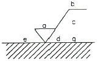
- a : 중심선 평균거칠기의 값
- b : 가공방법
- c : 컷오프값
- d : a 이외의 표면거칠기의 값
(정답률: 69%)
35. 도면의 양식 중 그려진 도면의 내용을 좌표로 읽을 수 있도록 마련하는 것은?
- 비교눈금
- 중심마크
- 재단마크
- 도면의 구역
(정답률: 36%)
36. 그림의 ⓐ 표기 부분이 의미하는 내용은?
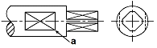
- 곡면
- 회전체
- 평면
- 구멍
(정답률: 73%)
37. 다음 도면의 표제란에 기입해야 할 각법 기호로 옳은 것은?(오류 신고가 접수된 문제입니다. 반드시 정답과 해설을 확인하시기 바랍니다.)
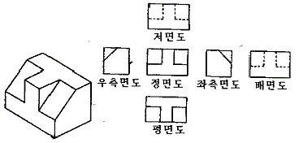
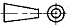
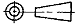
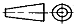
(정답률: 53%)
38. 한국 산업규격에서 재료기호 "STS" 가 의미하는 것은?
- 합금 공구 강재
- 탄소 공구 강재
- 스프링 강재
- 탄소 주강품
(정답률: 58%)
39. 다음 정면도와 측면도를 보고 평면도에 해당하는 것은? (제 3각법의 경우)
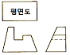
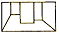
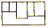
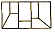
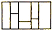
(정답률: 76%)
40. 물체 전체를 중심을 기준으로 1/2로 절단하여 앞부분은 잘라내고, 남은 뒷부분의 단면 모양을 도시한 단면도는?
- 회전 단면도
- 부분 단면도
- 한쪽 단면도
- 온 단면도
(정답률: 53%)
41. 도면에서 서로 겹치는 경우 가장 우선적으로 나타내야 하는 것은?
- 치수보조선
- 중심선
- 절단선
- 기호
(정답률: 59%)
42. 도면을 접어서 사용하거나 보관하고자 할 때 앞부분에 나타내어 보이도록 하는 부분은?
- 부품 번호가 있는 부분
- 표제란이 있는 부분
- 조립도가 있는 부분
- 도면이 그려지지 않은 뒷면
(정답률: 71%)
43. 구멍의 최소치수가 축의 최대치수보다 큰 경우이며, 항상 틈새가 생기는 끼워맞춤으로 직선운동이나 회전운동이 필요한 기계부품의 조립에 적용하는 것은?
- 억지 끼워 맞춤
- 중간 끼워 맞춤
- 헐거운 끼워 맞춤
- 구멍기준식 끼워 맞춤
(정답률: 79%)
44. 다음 보기의 도면과 같이 치수 50 밑에 직선을 붙이면 무엇을 나타내는가?
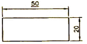
- 다듬질 치수
- 가공치수
- 기준치수
- 비례척이 아닌 치수
(정답률: 69%)
45. 다음 중 치수기입 원칙에 어긋나는 것은?
- 관련되는 치수는 되도록 한곳에 모아서 기입한다.
- 치수는 되도록 공정마다 배열을 분리하여 기입한다.
- 중복된 치수 기입을 피한다.
- 치수는 각 투상도에 고르게 분포되도록 한다.
(정답률: 72%)
46. 벨트 풀리 암의 단면형을 도형 안에 회전 단면 도시할 때 표현하는 외형선은?
- 가는 실선
- 굵은 실선
- 가는 1점 쇄선
- 굵은 2점 쇄선
(정답률: 41%)
47. 코일 스프링의 제도 방법에 대한 설명으로 틀린 것은?
- 하중이 걸린 상태에서 그릴 때에는 선도(diagram) 또는 그 때의 치수와 하중을 기입한다.
- 스프링의 종류와 모양만을 도시할 때에는 재료의 중심선만을 굵은 실선으로 그린다.
- 코일 부분의 중간 부분을 생략할 때에는 생략한 부분을 가는 1점 쇄선 또는 가는 2점 쇄선으로 표시한다.
- 특별한 단서가 없는 한 모두 왼쪽 감기로 도시하고, ‘감긴 방향 왼쪽’이라고 표시한다.
(정답률: 68%)
48. 나사의 호칭 "좌 M 10 - 6H / 6g"의 설명으로 틀린 것은?
- 왼나사이며, 한 줄 나사이다.
- 미터 보통나사로 호칭지름은 10㎜이다.
- 나사의 리드는 6㎜이다.
- 암나사 등급은 6H이다.
(정답률: 56%)
49. 잇수 18, 피치원 지름 108인 스퍼기어의 모듈은?
- 2
- 4
- 6
- 8
(정답률: 83%)
50. 볼에 베어링의 호칭 번호가 62/22 이면 안지름은?
- 22㎜
- 110㎜
- 55㎜
- 100㎜
(정답률: 56%)
51. 핀의 호칭이 "평행 핀 h78 - 5 × 32 SM45C" 라고 되어있다. 핀의 길이는 얼마인가?
- 7
- 5
- 32
- 45
(정답률: 69%)
52. 축을 도시하는 방법으로 틀린 것은?
- 가공 방향을 고려하여 도시한다.
- 길이 방향으로 절단하여 온 단면도로 표현한다.
- 축의 끝에는 모따기를 할 경우 모따기 치수를 기입한다.
- 중심선을 수평방향으로 놓고 옆으로 길게 놓은 상태로 도시한다.
(정답률: 74%)
53. 둥근 머리에 육각 홈을 파 놓은 것으로, 볼트의 머리가 밖으로 나오지 않아야 하는 곳에 주로 사용하는 볼트는?
- 접시머리 볼트
- 스터드 볼트
- 육각 볼트
- 육각구멍붙이 볼트
(정답률: 55%)
54. 파이프에 흐르는 유체의 종류와 기호 연결로 틀린 것은?
- 공기 - A
- 유류 - O
- 가스 - G
- 수증기 - W
(정답률: 79%)
55. 기어를 제도할 때 피치원을 표시하는 선은?
- 실선
- 파선
- 가는 1점 쇄선
- 가는 2점 쇄선
(정답률: 82%)
56. 용접기호에서 스폿 용접 기호는?
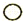
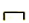
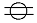
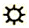
(정답률: 43%)
57. 단면도 작성이 용이하며, 물리적 성질(체적 등)의 계산이 용이한 3차원 모델링은?
- 솔리드 모델링
- 서피스 모델링
- 와이어 프레임 모델링
- 공간 모델링
(정답률: 75%)
58. 컴퓨터의 기억용량 단위에서 1MB는 몇 byte 인가?
- 220
- 210
- 230
- 10-9
(정답률: 37%)
59. CAD시스템에 사용되는 출력장치에 해당하지 않는 것은?
- 플로터
- 잉크젯 프린터
- 디스플레이장치
- 태블릿
(정답률: 71%)
60. CAD시스템에서 마지막 점에서 다음 점까지의 각도와 거리를 입력하여 선긋기를 하는 입력방법은?
- 절대좌표 입력밥법
- 상대좌표 입력밥법
- 원통좌표 입력밥법
- 상대극좌표 입력밥법
(정답률: 62%)
스프링 상수 = (추의 무게) ÷ (스프링의 늘어난 길이)
스프링 상수 = 40N ÷ 20㎜
스프링 상수 = 2[N/㎜]
따라서, 정답은 "2"입니다.